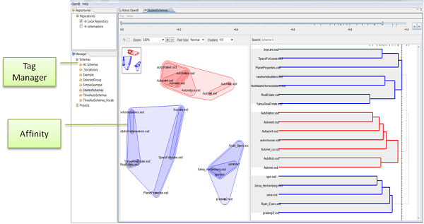

Overview
Large enterprises, such as corporations, governments, and research consortia present chief information officers (CIOs) and information architects with distinct challenges. These enterprises have hundreds to thousands of data sources, making it extremely difficult to obtain a clear overview of the organization's information assets. This makes it challenging to quickly find opportunities for information sharing or consolidation.
Affinity is a free, open source visualization and exploration tool that enables an organization to gain a clear overview of the relationships among its information assets. Affinity takes a group of schemas as input and clusters together semantically related schemas. As an example, suppose an organization had four data schemas: two about cars and two about real estate. Affinity will group the two car schemas together and group the two real estate schemas together. These relationships are visually represented in Affinity. A user can drill down into clusters to further explore the details and assess potential candidates for data sharing or consolidation.
Description
Affinity provides an interface for viewing and exploring clustered objects (like schemas). The figure below shows the main components required to use it: the Tag Manager and Affinity itself. 
Tags
The Tag Manager allows a user to tag schemas. If a group of schemas share a common tag then they can be opened with Affinity.
Affinity utilizes OpenII's internal database (by default an open-source Apache Derby database) to store schemas. The Tag Manager is one of the many tools that OpenII provides for working with the data repository so the user does not need to interact with the database directly.
Affinity
Affinity depicts schema clusters two different ways: using a 2D view (the left pane) and using a dendrogram (the right pane). A user can explore the clusters in various ways.
Affinity automatically creates the clusters without requiring any user input other than the Tag to be clustered. Clustering is based on similarity scores. The similarity scores are determined by treating each schema as a text document and calculating the size of the intersection divided by the size of the union of terms.
Terminology
2D View
A diagram used to show the degree of similarity between all schemas. A 2D View occupies the left pane of Affinity.
Cluster
A group of schemas that Affinity has identified as being related.
Dendrogram
A branching diagram used to show clusters. A dendrogram occupies the right pane of Affinity.
Schema
A structured representation of a set of concepts and the relationships between them. Examples of schemas include database schemas, XML schemas, and OWL ontologies.
Tag
A descriptive word used to label a schema. Multiple schemas can share the same tag.
Term
A word that appears in a schema. A term could be the name of a schema element or a word that appears in its description.